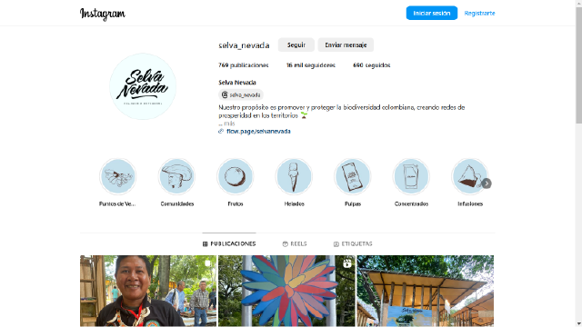

2. Narración de Impacto en USAID: Métodos y Mejores Prácticas
Formatos y plataformas para compartir historias
Para asegurarnos de que nuestras historias alcancen a la audiencia correcta y generen el efecto deseado, es esencial elegir el formato y la plataforma adecuados. Cada tipo de contenido y canal tiene sus propias fortalezas y puede amplificar diferentes aspectos de nuestras narrativas. A continuación, exploramos las diversas maneras en las que podemos contar nuestras historias de éxito, asegurándonos de que lleguen de manera efectiva a nuestras audiencias objetivo.
¿En qué formatos se pueden contar estas historias?
Historias creadas con base en videos cuya duración no supera los cinco minutos, combina música e imágenes. La historia se cuenta al principio y se muestran las ideas clave a través de títulos y subtítulos.
Historias visualmente impactantes, que se construyen usando videos cortos y fotografías emotivas. Este material va acompañado de descripciones cortas que proveen información relevante sobre el contexto e información clave del Programa.
Historias contadas a partir de fotografías impactantes con una descripción que cautive a la audiencia. Esta galería también se puede complejizar o volver más robusta, incluyendo audios testimoniales y textos explicativos.
Historias en formato escrito que no toman más de cinco minutos de lectura. Estas narrativas presentan primero el argumento, luego una información del Programa y las contribuciones específicas de la Misión. Las historias que duran más de 10 minutos se dividen, por lo general, en dos capítulos.
Historias que se publican en un sitio web tipo blog. Los blogs son espacios ideales para presentar colecciones de historias que muestran la relevancia de estas. Adicionalmente, son plataformas que se pueden actualizar con mayor frecuencia.
Historias que se narran en formato audio, transmitidas a través de plataformas digitales. Son adecuadas para captar la atención de diferentes audiencias a partir de una serie de episodios, relacionados con una temática central común.
Historias que se narran por partes a través de varias plataformas digitales, pero que son complementarías entre sí. Cada parte se puede consumir y comprender de manera independiente. Sin embargo, si se consumen todas, la audiencia tendrá una perspectiva más integral de la historia. Este formato capta a audiencias, y sirve para dirigirlas a plataformas que probablemente nunca descubrirán.

Ejemplo: Selva Nevada
Más ejemplos USAID
Te invitamos a explorar la colección de historias de éxito en conmemoración del día de la mujer, donde logra aportar a las transformaciones territoriales en beneficio de las comunidades a través del relacionamiento con el sector privado.